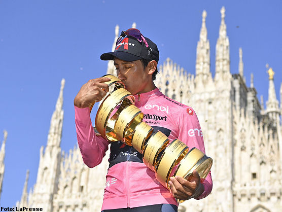

Giro Italy 2021
Egan Bernal ganó el 104º Giro de Italia. Tras la última contrarreloj, la Senago Milano Tissot ITT, el corredor colombiano mantuvo un margen de 1’29” sobre Damiano Caruso, segundo en el podio de Milán con Simon Yates en tercera posición a 4’15”. En el escenario único de la Piazza Duomo, Egan Bernal elevó al cielo el Trofeo Senza Fine en el que acababa de grabarse su nombre. El segundo y tercer puesto fueron para Damiano Caruso (Bahrain Victorious) y Simon Yates (Team BikeExchange) respectivamente. En la última etapa de la Corsa Rosa se impuso el campeón del mundo de contrarreloj Filippo Ganna con un tiempo de 33’48″60, a pesar de un pinchazo que le obligó a cambiar de bicicleta en la parte final de la carrera. Segundo puesto para Rémi Cavagna, que acabó contra las barreras tras una curva equivocada, tercer puesto para Edoardo Affini.
